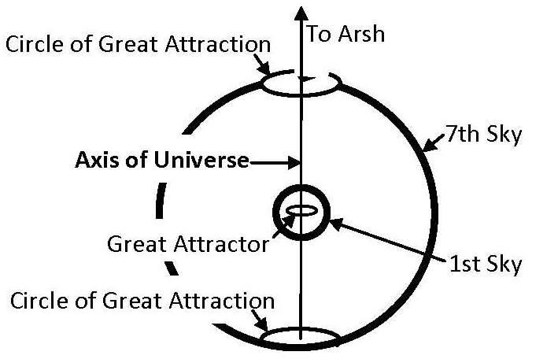

4b. Axis of the Universe
4 খ. মহাবিশ্বের অক্ষ
In the seven-sky universe, the axis most likely runs through the 'Circles of Great Attractions.' There may be a total of 13 such circles. The first, innermost sky contains one circle, known as the Great Attractor, while each of the other skies may contain two circles. In the following figure, the axis is shown with the circles of the first and seventh skies. FIGURE 30.12: Axis of the Universe

চিত্র 30_12 / Figure 30_12
সাত-আকাশের মহাবিশ্বে, অক্ষটি সম্ভবত 'মহান আকর্ষণের বৃত্তের' মধ্য দিয়ে চলে। এরকম মোট 13টি সার্কেল থাকতে পারে। প্রথম, অন্তঃস্থ আকাশে একটি বৃত্ত রয়েছে, যা গ্রেট অ্যাট্রাক্টর নামে পরিচিত, অন্য আকাশের প্রতিটিতে দুটি বৃত্ত থাকতে পারে। নিম্নলিখিত চিত্রে, অক্ষটি প্রথম এবং সপ্তম আকাশের বৃত্তের সাথে দেখানো হয়েছে। চিত্র 30.12: মহাবিশ্বের অক্ষ
চিত্র 30_12 / Figure 30_12
The axis running through the circles forms a path, along which channels from the Araf travel. This may be the only path through which something can enter the universe and cross the skies. Command stations associated with the angels might be positioned along this path. [Channels and Command Stations are deliberately discussed in Section-9 of Chapter-6] The entire universe may be rotating around the axis and contracting.
বৃত্তের মধ্য দিয়ে চলমান অক্ষটি একটি পথ তৈরি করে, যেটি বরাবর আরাফ থেকে আসা চ্যানেলগুলি। এটিই একমাত্র পথ যা দিয়ে কিছু মহাবিশ্বে প্রবেশ করতে পারে এবং আকাশ অতিক্রম করতে পারে। ফেরেশতাদের সাথে যুক্ত কমান্ড স্টেশন এই পথ বরাবর অবস্থান করা হতে পারে. [চ্যানেল এবং কমান্ড স্টেশনগুলি ইচ্ছাকৃতভাবে অধ্যায়-6-এর অধ্যায়-9-এ আলোচনা করা হয়েছে] সমগ্র মহাবিশ্ব হয়তো অক্ষের চারপাশে ঘুরছে এবং সংকোচন করছে।
―Verily that which ye are promised is true; and verily Judgment and Justice must indeed come to pass. By the sky with the nature of crochet (hooked needle for weaving); truly ye are in a doctrine discordant, through which are deluded…such as would be deluded. Woe to the falsehood-mongers, those who heedless in a flood of confusion. They ask, "When will be the Day of Judgment and Justice?" A Day when they will be tried over the Fire! "Taste ye your trial! This is what ye used to ask to be hastened!"" [Al Quran 51:5-14]
-তোমাদেরকে যে প্রতিশ্রুতি দেওয়া হয়েছে তা সত্য; এবং সত্যই রায় এবং ন্যায়বিচার অবশ্যই ঘটতে হবে। crochet প্রকৃতির সঙ্গে আকাশ দ্বারা (বয়ন জন্য hooked সুই); সত্যিই আপনি একটি মতবাদের মধ্যে অসঙ্গতিপূর্ণ, যার মাধ্যমে প্রতারিত হয়...যেমন প্রতারিত হবে। ধিক্ মিথ্যাবাদীদের, যারা বিভ্রান্তির বন্যায় গাফেল। তারা জিজ্ঞেস করে, কবে হবে বিচার ও বিচারের দিন? যেদিন তারা আগুনের উপর পরীক্ষা করা হবে! "তোমরা তোমাদের পরীক্ষা আস্বাদন কর! এটিই যা তোমরা ত্বরা করতে চেয়েছিলে!" [আল কুরআন 51:5-14]
4c. The Rolling
4 গ. দ্য রোলিং
The seven-sky-universe may include two kinds of rolling: The Rolling of Individual Sky The Rolling around the Axis of the Universe
সাত-আকাশ-মহাবিশ্বের মধ্যে দুটি ধরণের ঘূর্ণায়মান থাকতে পারে: স্বতন্ত্র আকাশের ঘূর্ণায়মান মহাবিশ্বের অক্ষের চারপাশে ঘূর্ণায়মান
4c-I. The Rolling of Individual Sky
4c-I. দ্য রোলিং অফ ইন্ডিভিজুয়াল স্কাই
The galaxies within a sky are moving toward the central plane (or central sphere) of that sky, forming walls (as discussed in Section 7 of Chapter 2). However, a galaxy cannot settle into the central plane without rolling. This rolling motion resembles the swing of a pendulum, where the galaxy oscillates across the central plane before eventually settling into a wall. Therefore, a Wall shrinks in thickness, as the falling objects swing with ever-reducing amplitude. Thus, a Sky possesses the characteristic of a crochet hook, drawing objects into its structure:
একটি আকাশের মধ্যে থাকা ছায়াপথগুলি সেই আকাশের কেন্দ্রীয় সমতলের (বা কেন্দ্রীয় গোলক) দিকে অগ্রসর হচ্ছে, দেয়াল তৈরি করছে (অধ্যায় 2-এর 7 নম্বরে আলোচনা করা হয়েছে)। যাইহোক, একটি গ্যালাক্সি ঘূর্ণায়মান ছাড়া কেন্দ্রীয় সমতলে বসতি স্থাপন করতে পারে না। এই ঘূর্ণায়মান গতি একটি পেন্ডুলামের দোলের অনুরূপ, যেখানে গ্যালাক্সিটি শেষ পর্যন্ত একটি প্রাচীরের মধ্যে বসতি স্থাপন করার আগে কেন্দ্রীয় সমতল জুড়ে দোলা দেয়। অতএব, একটি প্রাচীর পুরুত্বে সঙ্কুচিত হয়, কারণ পতনশীল বস্তুগুলি সর্বদা হ্রাসকারী প্রশস্ততার সাথে দোল খায়। এইভাবে, একটি স্কাই একটি ক্রোশেট হুকের বৈশিষ্ট্য ধারণ করে, তার কাঠামোতে বস্তুগুলিকে আঁকতে থাকে:
―By the sky with the nature of crochet (weaving needle with hook)‖ [Al Quran 51:7] The weaving skies are forming walls with the galaxies, causing the skies to gradually decrease in thickness.
"আকাশের কসম ক্রোশেটের প্রকৃতির সাথে (হুক দিয়ে সুই বুনন)" [আল কুরআন 51:7] বুনন আকাশগুলি ছায়াপথের সাথে দেয়াল তৈরি করছে, যার ফলে আকাশ ধীরে ধীরে পুরুত্ব হ্রাস পাচ্ছে।
Figure 30.13: Crochet
চিত্র 30.13: ক্রোশেট
The central sphere of each sky is crowded with galaxies. In this dense region, the galaxies are compressed similarly to quasars. Gradually, they adhere to the wall, stabilizing its structure. However, the galaxies do not merge with one another; they remain distinct within the dense space. Walls like Her–CrB GW, CCLOG, and Huge-LOG appear to be located in the seventh sky. These walls span billions of light-years in length and width, yet their thickness is only 900 million light-years, which is less than the diameter of the Milky Way galaxy. Despite their thinness, the walls contain many galaxies, which are squeezed within them. As a wall shrinks in thickness, each subsequent emitted wave of light becomes increasingly red-shifted, making the object appear to be receding. If a cluster is settling closely into the central sphere of a sky (into a wall), it exhibits the 'Finger of God' effect in the redshift plot due to the increasingly powerful gravitational field near the central sphere. All galaxies within a sky will eventually fall into the central sphere, where the entire sphere will become a continuous wall made of extremely compacted galaxies, along with free dust and gases. Therefore, a sky with walls is like an inflated balloon whose elasticity continuously increases, causing the sky to tend to shrink. Due to the increasing pressure from shrinking, the rotation of the skies around the axis of the universe is continuously accelerating, causing the universe to close in at an ever-faster speed.
প্রতিটি আকাশের কেন্দ্রীয় গোলক গ্যালাক্সিতে ঠাসা। এই ঘন অঞ্চলে, গ্যালাক্সিগুলি কোয়াসারের মতোই সংকুচিত হয়। ধীরে ধীরে, তারা প্রাচীরকে মেনে চলে, এর গঠন স্থিতিশীল করে। যাইহোক, ছায়াপথগুলি একে অপরের সাথে মিলিত হয় না; তারা ঘন স্থানের মধ্যে স্বতন্ত্র থাকে। Her-CrB GW, CCLOG, এবং Huge-LOG-এর মতো দেয়ালগুলি সপ্তম আকাশে অবস্থিত বলে মনে হচ্ছে। এই দেয়াল দৈর্ঘ্য এবং প্রস্থে বিলিয়ন আলোকবর্ষ বিস্তৃত, তবুও তাদের পুরুত্ব মাত্র 900 মিলিয়ন আলোকবর্ষ, যা মিল্কিওয়ে গ্যালাক্সির ব্যাসের চেয়ে কম। তাদের পাতলা হওয়া সত্ত্বেও, দেয়ালগুলিতে অনেকগুলি ছায়াপথ রয়েছে, যা তাদের মধ্যে চেপে আছে। একটি প্রাচীর পুরুত্বে সঙ্কুচিত হওয়ার সাথে সাথে প্রতিটি পরবর্তী নির্গত আলোর তরঙ্গ ক্রমশ লাল-স্থানান্তরিত হয়ে যায়, যার ফলে বস্তুটি পিছিয়ে যাচ্ছে বলে মনে হয়। যদি একটি ক্লাস্টার একটি আকাশের কেন্দ্রীয় গোলকের (একটি প্রাচীরের মধ্যে) ঘনিষ্ঠভাবে বসতি স্থাপন করে, তবে এটি কেন্দ্রীয় গোলকের কাছাকাছি ক্রমবর্ধমান শক্তিশালী মহাকর্ষীয় ক্ষেত্রের কারণে রেডশিফ্ট প্লটে 'ঈশ্বরের আঙুল' প্রভাব প্রদর্শন করে। একটি আকাশের মধ্যে থাকা সমস্ত ছায়াপথগুলি শেষ পর্যন্ত কেন্দ্রীয় গোলকের মধ্যে পড়বে, যেখানে পুরো গোলকটি মুক্ত ধুলো এবং গ্যাস সহ অত্যন্ত সংকুচিত ছায়াপথ দিয়ে তৈরি একটি অবিচ্ছিন্ন প্রাচীরে পরিণত হবে। অতএব, দেয়াল সহ একটি আকাশ একটি স্ফীত বেলুনের মতো যার স্থিতিস্থাপকতা ক্রমাগত বৃদ্ধি পায়, যার ফলে আকাশ সংকুচিত হতে থাকে। সঙ্কুচিত হওয়ার কারণে ক্রমবর্ধমান চাপের কারণে, মহাবিশ্বের অক্ষের চারপাশে আকাশের ঘূর্ণন ক্রমাগত ত্বরান্বিত হচ্ছে, যার ফলে মহাবিশ্ব একটি দ্রুত গতিতে বন্ধ হয়ে যাচ্ছে।
4c-II. The Rolling of Skies around the Axis of the Universe
4c-II. মহাবিশ্বের অক্ষের চারপাশে আকাশের ঘূর্ণায়মান
The skies are rolling, and the universe is contracting. Eventually, all the skies will be rolled up around the axis of the universe, much like how ancient people rolled up a long paper on a wooden roller (a scroll of a book).
আকাশ গড়িয়ে যাচ্ছে, আর মহাবিশ্ব সংকুচিত হচ্ছে। অবশেষে, সমস্ত আকাশ মহাবিশ্বের অক্ষের চারপাশে ঘূর্ণায়মান হবে, যেমন প্রাচীন লোকেরা কাঠের রোলারে (একটি বইয়ের একটি স্ক্রল) একটি দীর্ঘ কাগজ গড়িয়েছিল।
―On the day when We will roll up the Skies (Universe) like the rolling up of the scroll for writings…‖ [Al Quran 21: 104]
"যেদিন আমরা আকাশকে (মহাবিশ্বকে) গুটিয়ে নেব লেখার জন্য স্ক্রোলের মতন..." [আল কুরআন 21:104]
―See they not that We gradually come to the land (land of Judgment) by reducing it (the universe) from its outlying border (Seventh Sky)? Allah judges; there is no adjuster of His judgment, and He is swift in calling to account.‖ [Al Quran 13: 41]
-তারা কি দেখে না যে, আমরা ধীরে ধীরে (বিচারের দেশে) আসি তার বহির্গত সীমানা (সপ্তম আকাশ) থেকে কমিয়ে দিয়ে? আল্লাহ বিচার করেন; তাঁর বিচারের কোনো সমন্বয়কারী নেই এবং তিনি দ্রুত হিসাব গ্রহণ করেন।'' [আল কুরআন 13:41]
In the above verse, the 'coming' does not refer solely to Allah; it also includes entities associated with the Final Judgment, such as the Arsh, Araf, Jannaat, and others. When the universe (Samawaat) is fully rolled up, these entities will be in close proximity.
উপরোক্ত আয়াতে 'আসমান' বলতে শুধুমাত্র আল্লাহকে বোঝায় না; এটি চূড়ান্ত বিচারের সাথে সম্পর্কিত সত্ত্বাগুলিও অন্তর্ভুক্ত করে, যেমন আরশ, আরাফ, জান্নাত এবং অন্যান্য। যখন মহাবিশ্ব (সামাওয়াত) সম্পূর্ণরূপে গুটানো হবে, তখন এই সত্তাগুলি কাছাকাছি থাকবে।
4c-III. An Additional Drive to the Rolling Contraction
4c-III. ঘূর্ণায়মান সংকোচন একটি অতিরিক্ত ড্রাইভ
During the expanding phase of the universe, the rotational speed of the skies was decreasing. In the contracting phase, however, the rotational speed is expected to increase. For example, when an astral object falls toward Earth along a rotational path, its speed increases as it gets closer. However, this type of contraction would take an extraordinarily long time. For example, the Solar System is contracting as its planets rotate, but the rate of closure is negligible. So, an additional drive of contraction is applied to the universe:
মহাবিশ্বের সম্প্রসারণ পর্যায়ে, আকাশের ঘূর্ণন গতি কমছিল। চুক্তির পর্যায়ে, তবে, ঘূর্ণন গতি বাড়বে বলে আশা করা হচ্ছে। উদাহরণস্বরূপ, যখন একটি সূক্ষ্ম বস্তু একটি ঘূর্ণন পথ ধরে পৃথিবীর দিকে পড়ে, তখন এটি কাছাকাছি আসার সাথে সাথে এর গতি বৃদ্ধি পায়। যাইহোক, এই ধরনের সংকোচন একটি অসাধারণ দীর্ঘ সময় লাগবে। উদাহরণস্বরূপ, সৌরজগতের গ্রহগুলি ঘোরার সাথে সাথে সংকুচিত হচ্ছে, তবে বন্ধের হার নগণ্য। সুতরাং, মহাবিশ্বে সংকোচনের একটি অতিরিক্ত ড্রাইভ প্রয়োগ করা হয়:
―See they not that We gradually come to the land (of Judgment) by reducing it (the universe) from its outlying border (Seventh Sky)? Allah judges; there is no adjuster of His judgment, and He is swift in calling to account.‖ [Al Quran 13: 41] ―Soon after the trouble of those days (end-time events), the sun will grow dark, the moon will no longer shine, the stars will fall from the sky, and the powers in space will be driven from their courses.‖ – Matthew 24:29, Holy Bible (GNB)
-তারা কি দেখে না যে, আমরা (বিচারের) ভূমিতে (বিচারের) সীমানা (সপ্তম আকাশ) থেকে সংকুচিত করে আসছি? আল্লাহ বিচার করেন; তাঁর বিচারের কোন সমন্বয়কারী নেই, এবং তিনি হিসাব নেওয়ার ক্ষেত্রে দ্রুত।'' [আল কুরআন 13: 41] - শীঘ্রই সেই দিনগুলির সমস্যা (শেষ সময়ের ঘটনা) পরে, সূর্য অন্ধকার হয়ে যাবে, চাঁদ আর আলোকিত হবে না, তারাগুলি আকাশ থেকে পড়বে, এবং মহাকাশের শক্তিগুলি তাদের গতিপথ থেকে বিতাড়িত হবে। (জিএনবি)
―In the days after that time of trouble the sun will grow dark, the moon will no longer shine, the stars will fall from the sky, and the powers in space will be driven from their courses.‖ – Mark 13: (24–25), Holy Bible (GNB)
"সেই কষ্টের দিনগুলির পরের দিনগুলিতে সূর্য অন্ধকার হয়ে যাবে, চাঁদ আর আলোকিত হবে না, তারাগুলি আকাশ থেকে পড়ে যাবে, এবং মহাকাশের শক্তিগুলি তাদের পথ থেকে বিতাড়িত হবে।" - মার্ক 13: (24-25), পবিত্র বাইবেল (GNB)
Thus, an 'additional force of contraction' is applied from the Seventh Sky, as the powers in space are driven from their courses, or from the outer boundary. A sky is balanced by the pull of the flanking skies. The innermost sky (the First Sky) is balanced by the pull of the Great Attractor at the center and the Second Sky on the outer side. However, the Seventh Sky, being the outermost, is imbalanced. As a result, the 'additional force of contraction' is applied from the Seventh Sky. Due to the 'additional force of contraction,' the 7th Sky caused the inner sky (6th Sky) to rotate and contract more rapidly. This process continued as each inner sky influenced the next, with the same effect being transmitted inward. It seems that this drive has now reached the 3rd Sky.
এইভাবে, সপ্তম আকাশ থেকে একটি 'অতিরিক্ত সংকোচন শক্তি' প্রয়োগ করা হয়, কারণ মহাকাশের শক্তিগুলি তাদের গতিপথ থেকে বা বাইরের সীমানা থেকে চালিত হয়। ফ্ল্যাঙ্কিং আকাশের টানে একটি আকাশ ভারসাম্যপূর্ণ। অন্তরতম আকাশ (প্রথম আকাশ) কেন্দ্রে এবং দ্বিতীয় আকাশের বাইরের দিকের মহা আকর্ষণকারীর টানে ভারসাম্যপূর্ণ। যাইহোক, সপ্তম আকাশ, সবচেয়ে বাইরের হওয়ায়, ভারসাম্যহীন। ফলস্বরূপ, সপ্তম আকাশ থেকে 'অতিরিক্ত সংকোচনের শক্তি' প্রয়োগ করা হয়। 'অতিরিক্ত সংকোচনের বল'-এর কারণে, 7ম আকাশ ভিতরের আকাশকে (6ষ্ঠ আকাশ) আরও দ্রুত ঘোরাতে এবং সংকোচন ঘটায়। এই প্রক্রিয়া চলতে থাকে যেহেতু প্রতিটি অভ্যন্তরীণ আকাশ পরবর্তীকে প্রভাবিত করে, একই প্রভাব ভিতরের দিকে সঞ্চারিত হয়। মনে হচ্ছে এই ড্রাইভ এখন তৃতীয় আকাশে পৌঁছেছে।
4c-IV. Timing of Rolling Contraction
4c-IV. রোলিং সংকোচনের সময়
In the 1990s, the 'Supernova Cosmological Project' and the 'High-Z Supernova Search Team' measured the distances and recession velocities of Type Ia supernovae. Since they assumed the universe to be uniform and isotropic, their analyses have limited value in this discussion. However, their observations still provide some useful information. They found the distant supernovae to be relatively fainter. These objects, located in the outer skies from our perspective, suggest that the supernovae have settled into the central spheres of their respective skies. This increases the elasticity of a sky, and as elasticity increases, the sky rotates faster. It appears that the skies of these supernovae are shrinking and rotating at increasingly rapid speeds. The teams found that the supernovae beyond the midpoint were relatively fainter. This suggests that the skies from the 3rd and beyond are rotating and closing at higher speeds. So, it is likely that the additional force of contraction has now reached the 3rd sky. How long the universe would need to collapse? In Section-7 of Chapter-2, we discussed the large- scale structure of the universe, concluding that the seven- sky universe should span 10 to 14 billion light-years across. The apparent size of the universe is greater due to the redshift caused by the skies (waved space) and the shrinking walls. Therefore, Doomsday is not far off; it may occur within just a few hundred earthly years. In fact, even next week, the sun could rise from the west. ―It is Allah Who has sent down the Book in truth and the balance, and what will make thee realize that perhaps the hour is close in hand?‖ [Al Quran 42:17]
1990-এর দশকে, 'সুপারনোভা কসমোলজিক্যাল প্রজেক্ট' এবং 'হাই-জেড সুপারনোভা সার্চ টিম' টাইপ আইএ সুপারনোভার দূরত্ব এবং মন্দা বেগ পরিমাপ করেছিল। যেহেতু তারা মহাবিশ্বকে অভিন্ন এবং আইসোট্রপিক বলে ধরে নিয়েছিল, তাই এই আলোচনায় তাদের বিশ্লেষণের মূল্য সীমিত। যাইহোক, তাদের পর্যবেক্ষণ এখনও কিছু দরকারী তথ্য প্রদান করে। তারা দূরবর্তী সুপারনোভাকে তুলনামূলকভাবে দুর্বল বলে মনে করেছিল। আমাদের দৃষ্টিকোণ থেকে বাইরের আকাশে অবস্থিত এই বস্তুগুলি সুপারিশ করে যে সুপারনোভাগুলি তাদের নিজ নিজ আকাশের কেন্দ্রীয় গোলকগুলিতে বসতি স্থাপন করেছে। এটি একটি আকাশের স্থিতিস্থাপকতা বৃদ্ধি করে এবং স্থিতিস্থাপকতা বৃদ্ধির সাথে সাথে আকাশ দ্রুত ঘোরে। দেখা যাচ্ছে যে এই সুপারনোভাগুলির আকাশ ক্রমবর্ধমান দ্রুত গতিতে সঙ্কুচিত এবং আবর্তিত হচ্ছে। দলগুলি দেখতে পেয়েছে যে মধ্যবিন্দুর বাইরে সুপারনোভা তুলনামূলকভাবে দুর্বল ছিল। এটি পরামর্শ দেয় যে 3য় এবং তার বাইরের আকাশগুলি উচ্চ গতিতে ঘূর্ণায়মান এবং বন্ধ হচ্ছে। সুতরাং, সম্ভবত সংকোচনের অতিরিক্ত বল এখন তৃতীয় আকাশে পৌঁছেছে। মহাবিশ্বের পতন হতে কতক্ষণ লাগবে? অধ্যায়-2-এর সেকশন-7-এ, আমরা মহাবিশ্বের বৃহৎ আকারের কাঠামো নিয়ে আলোচনা করেছি, এই সিদ্ধান্তে পৌঁছেছি যে সাত-আকাশের মহাবিশ্ব 10 থেকে 14 বিলিয়ন আলোকবর্ষ জুড়ে থাকা উচিত। আকাশ (তরঙ্গিত স্থান) এবং সঙ্কুচিত দেয়ালের কারণে লাল স্থানান্তরের কারণে মহাবিশ্বের আপাত আকার বড়। অতএব, কিয়ামতের দিন বেশি দূরে নয়; এটি মাত্র কয়েকশ পার্থিব বছরের মধ্যে ঘটতে পারে। আসলে আগামী সপ্তাহেও সূর্য পশ্চিম দিক থেকে উঠতে পারে। "আল্লাহই সেই কিতাব যিনি নাযিল করেছেন সত্য ও ভারসাম্যের সাথে, এবং কিসে আপনাকে উপলব্ধি করবে যে সম্ভবত সময়টি নিকটবর্তী?" [আল কুরআন 42:17]
Most likely, the above verse is referring to the balance of time. The evolution of the universe due to the effects of the extended force fields of His nafs (soul) is experienced by us as time. In a purely expanding or purely contracting sky, the Arrows of Time would be dominant, and we would lose our freedom even further. We have appeared during an interim period when the 1st sky (the innermost sky), where we reside, is in a state of balance.
সম্ভবত, উপরের আয়াতটি সময়ের ভারসাম্যকে নির্দেশ করছে। তাঁর নফস (আত্মা) এর বর্ধিত বল ক্ষেত্রগুলির প্রভাবের কারণে মহাবিশ্বের বিবর্তন সময় হিসাবে আমাদের দ্বারা অনুভূত হয়। বিশুদ্ধভাবে প্রসারিত বা বিশুদ্ধভাবে সংকোচনশীল আকাশে, সময়ের তীরগুলি প্রভাবশালী হবে এবং আমরা আমাদের স্বাধীনতা আরও হারাবো। আমরা একটি অন্তর্বর্তী সময়কালে আবির্ভূত হয়েছি যখন প্রথম আকাশ (অন্তঃস্থ আকাশ), যেখানে আমরা বাস করি, ভারসাম্যের অবস্থায় রয়েছে।
5. Arrows of Time
5. সময়ের তীর